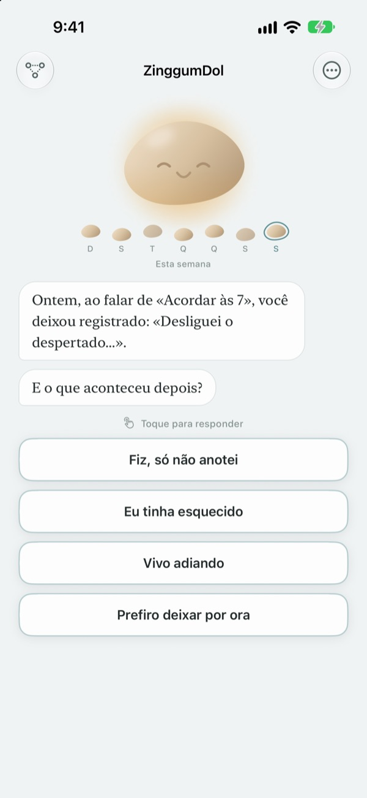
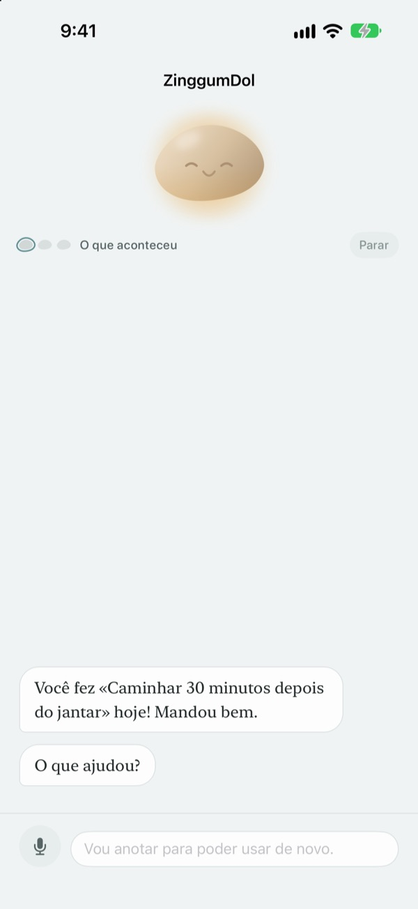
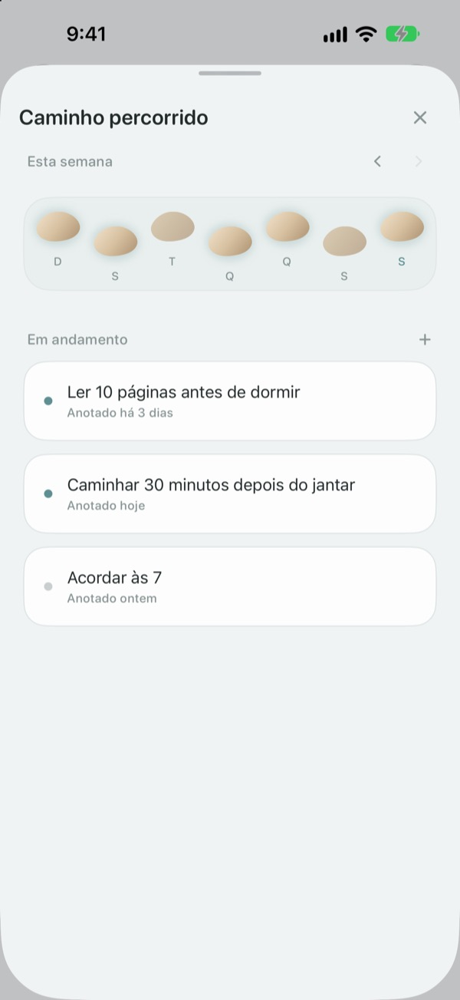
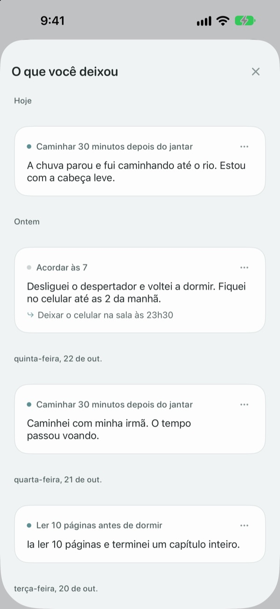

Tropeçar não é
cair no rio
No dia em que você não cumpre a meta, a pedrinha puxa conversa primeiro. Pergunta o que aconteceu, não o que você fez de errado, e devolve os fatos e o que você sente bem separados.
Conversar, escrever e ver seu caminho é grátis. Sem cadastro e sem anúncios.

Converse com a pedrinha
Você ia caminhar hoje à noite e não foi. Escolha uma resposta ou escreva a sua, e a pedrinha responde do mesmo jeito que no app.
Quando o dia não sai como o planejado, você se culpa?
Na noite em que você pula o treino, o primeiro pensamento costuma ser "qual é o meu problema?". Olhando com calma, teve hora extra, choveu, você estava exausto. O ZinggumDol pergunta o que aconteceu e como você se sente em momentos separados e coloca as duas coisas lado a lado. Quando você percebe que foram as circunstâncias e não a sua força de vontade, fica mais fácil achar o próximo passo pequeno.
A pedrinha puxa conversa primeiro
Defina uma meta e a pedrinha acompanha os dias em que deu certo e os dias em que você travou. Quando um dia escapa, ela pergunta "o que aconteceu?" em vez de "por que não?", e lembra o que você contou da última vez.
Nos dias em que escrever pesa, é só falar. A voz é reconhecida no seu aparelho e as gravações nunca são salvas.

Seus dias como pedras para atravessar o rio
Cada semana vira uma fileira de pedras. Os dias em que você não pisou também ficam lá; nada é apagado.
Mesmo com um buraco ou outro, dá para ver que o caminho continua.

Releia o que você escreveu
O que aconteceu, como você se sentiu e o que vai tentar depois ficam guardados por data. Releia um dia em que você travou do mesmo jeito e veja o que funcionou.
Um widget mostra uma frase da pedrinha na tela de início, e um lembrete no horário que você escolher convida a olhar para o dia.

Para começar são três passos
- 1
Escreva uma meta
Algo como "Caminhar 30 minutos depois do jantar".
- 2
Abra o app no fim do dia
A pedrinha pergunta como foi seu dia. Com um lembrete você não esquece.
- 3
Toque ou escreva sua resposta
Dá para parar quando quiser com
Prefiro deixar por ora.
Como a conversa acontece
- O que aconteceu
- Só os fatos: o que atrapalhou
- Como se sente
- Como você se sente agora, numa escala de cinco
- Olhar para trás
- A pedrinha devolve o que aconteceu e o que você sente, separados
- Próximo passo
- Você escolhe algo pequeno; cinco minutos bastam
- Encerramento
- Num dia muito pesado, ela não pergunta mais nada e sugere descansar
Você pode sair a qualquer momento, e o que disse até ali fica guardado.
Conversar e escrever é grátis. Pro se você quiser mais.
Grátis
- Todas as conversas com a pedrinha
- Até três metas
- Falar em vez de digitar
- Seu caminho e tudo o que você escreveu
- Widget e lembrete diário
- Bloqueio com código
ZinggumDol Pro
- Quantas metas você quiser
- Seis acabamentos de pedrinha para escolher
- Exportar seus registros em arquivo de texto
Compra única, é seu para sempre. Não é assinatura.
Nenhuma tela de pagamento aparece no meio da conversa. Em um aparelho novo ou depois de reinstalar, toque em Restaurar compras nos Ajustes.
Perguntas frequentes
Preciso explicar cada dia que falhei?
Não. Toque em Prefiro deixar por ora a qualquer momento e a conversa termina ali. O que você disse fica guardado para continuar depois.
Eu fiz, mas o app diz que não.
Toque em Fiz, só não registrei. A pedrinha aceita a correção e pergunta o que ajudou. O que funcionou fica guardado, e ela traz de volta na próxima vez que você travar.
Para onde vai o que eu falo em voz alta?
Sua voz vira texto no próprio aparelho e a gravação nunca é salva. Nos aparelhos compatíveis, as frases também são ajeitadas para ficar mais fáceis de ler, tudo no aparelho.
Quantas metas posso ter?
Três de graça. Quando terminar uma, use Soltar em Caminho percorrido para abrir espaço. Para mais de três, você precisa do ZinggumDol Pro.
O ZinggumDol Pro é assinatura?
Não. Você paga uma vez e é seu. Em um aparelho novo ou depois de reinstalar, toque em Restaurar compras nos Ajustes.
Outra pessoa pode ler meu diário?
Não existe conta. Seus registros ficam só no seu aparelho e no seu iCloud, e dá para bloquear o app com um código nos Ajustes. O que você escreve nunca é enviado ao desenvolvedor. Você também pode desativar as estatísticas de uso anônimas nos Ajustes.
Como mudo o horário do lembrete?
Em Lembrete diário, nos Ajustes, você liga, desliga e escolhe o horário.
A pedrinha me lembra do que eu já consegui?
Sim. Ela guarda o que te ajudou e, num dia difícil, lembra de algo que você conseguiu há pouco tempo.
Como apago tudo?
Toque em Apagar todos os registros nos Ajustes. Metas e registros somem de vez, inclusive nos outros aparelhos sincronizados pelo iCloud. Ajustes e compras continuam. Com o Pro, você pode antes guardar uma cópia com Exportar registros.
Como entro em contato?
Por "Enviar feedback" nos Ajustes do app ou por e-mail no endereço abaixo.
Dúvidas ou sugestões? Escreva para leeo@kakao.com.